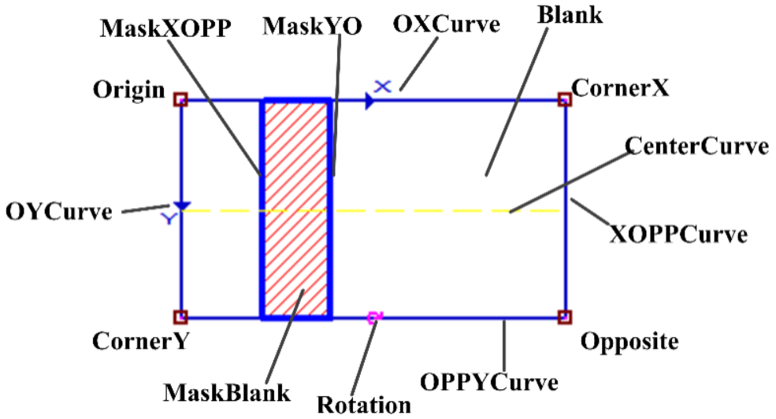

Biểu thị phiên bản nâng cấp của control dò tìm đường thẳng, tức là đồ họa có thể nhìn thấy trong view, ví dụ như vùng tìm kiếm của công cụ tìm đường thẳng, vùng tìm kiếm đường thẳng của công cụ nhiều đường tròn nhiều đường thẳng là vector thuộc kiểu này.

| Phân loại | Tên giao diện | Mô tả giao diện |
|---|---|---|
| Khởi tạo | scGuiFindLineEx | Hàm khởi tạo mặc định scGuiFindLineEx (dof=1). |
| Hàm | GetAffineRect | Lấy hình chữ nhật affine |
| SetAffineRect | Thiết lập hình chữ nhật affine | |
| GetMaskRegion | Lấy vị trí mask | |
| SetMaskRegion | Thiết lập vị trí mask | |
| GetSearchDirectionDOF | Lấy bậc tự do của hướng tìm kiếm. | |
| GetRectEx | Lấy hình chữ nhật biến đổi. | |
| SetRectEx | Thiết lập hình chữ nhật biến đổi. | |
| GetRectExCaliper | Lấy thước cặp hình chữ nhật biến đổi. | |
| SetRectExCaliper | Thiết lập thước cặp hình chữ nhật biến đổi. | |
| GetCaliperWidth | Lấy chiều rộng thước cặp（chỉ có hiệu lực ở chế độ thủ công）. | |
| SetCaliperWidth | Thiết lập chiều rộng thước cặp（chỉ có hiệu lực ở chế độ thủ công）. | |
| GetCaliperSpace | Lấy khoảng cách giữa các thước cặp（chỉ có hiệu lực ở chế độ thủ công）. | |
| SetCaliperSpace | Thiết lập khoảng cách giữa các thước cặp（chỉ có hiệu lực ở chế độ thủ công）. | |
| GetCaliperID | Lấy ID thước cặp. | |
| SetCaliperID | Thiết lập ID thước cặp. | |
| GetSearchDirection | Lấy hướng tìm kiếm của thước cặp. | |
| SetSearchDirection | Thiết lập hướng tìm kiếm của thước cặp. | |
| GetCaliperNum | Lấy số lượng thước cặp. |
Chức năng: khởi tạo đối tượng scGuiFindLineEx, bậc tự do của hướng tìm kiếm mặc định là 1, tham số này có thể không cần thiết lập, chỉ cần dùng trực tiếp scGuiFindLineEx() là được.
Tham số:
Giá trị trả về: không có.
Chức năng: lấy hình chữ nhật affine.
Tham số: không có.
Giá trị trả về: hình chữ nhật affine, kiểu scAffineRect.
Chức năng: thiết lập hình chữ nhật affine.
Tham số:
Giá trị trả về: không có.
Chức năng: lấy vị trí mask.
Tham số: không có.
Giá trị trả về: vị trí mask, vector kiểu sc2Vector, trong Python tương tự như list.
Chức năng: thiết lập vị trí mask.
Tham số:
Giá trị trả về: không có.
Chức năng: lấy bậc tự do của hướng tìm kiếm.
Tham số: không có.
Giá trị trả về: bậc tự do của hướng tìm kiếm, kiểu số nguyên.
Chức năng: lấy hình chữ nhật biến đổi.
Tham số: không có.
Giá trị trả về: hình chữ nhật biến đổi, kiểu scRectEx.
Chức năng: thiết lập hình chữ nhật biến đổi.
Tham số:
Giá trị trả về: không có.
Chức năng: lấy thước cặp hình chữ nhật biến đổi.
Tham số: không có.
Giá trị trả về: thước cặp hình chữ nhật biến đổi, kiểu scRectExCaliper.
Chức năng: lấy thước cặp hình chữ nhật biến đổi.
Tham số:
Giá trị trả về: kiểu bool, cho biết thiết lập có thành công hay không.
Chức năng: lấy chiều rộng thước cặp.
Tham số: không có.
Giá trị trả về: chiều rộng thước cặp, kiểu số nguyên.
Chức năng: thiết lập chiều rộng thước cặp.
Tham số:
Giá trị trả về: kiểu bool, cho biết thiết lập có thành công hay không.
Chức năng: lấy khoảng cách giữa các thước cặp.
Tham số: không có.
Giá trị trả về: khoảng cách giữa các thước cặp, kiểu số nguyên.
Chức năng: thiết lập khoảng cách giữa các thước cặp.
Tham số:
Giá trị trả về: kiểu bool, cho biết thiết lập có thành công hay không.
Chức năng: lấy ID thước cặp.
Tham số: không có.
Giá trị trả về: ID thước cặp, kiểu số nguyên.
Chức năng: thiết lập ID thước cặp.
Tham số:
Giá trị trả về: kiểu bool, cho biết thiết lập có thành công hay không.
Chức năng: lấy hướng tìm kiếm của thước cặp.
Tham số: không có.
Giá trị trả về: hướng tìm kiếm của thước cặp, kiểu số nguyên.
Chức năng: thiết lập hướng tìm kiếm của thước cặp.
Tham số:
Giá trị trả về: kiểu bool, cho biết thiết lập có thành công hay không.
Chức năng: lấy số lượng thước cặp.
Tham số: không có.
Giá trị trả về: số lượng thước cặp, kiểu số nguyên.
Không có
```python ROI_Line_gui = GvTool.GetToolData(“Công cụ tìm đường thẳng_021.Vùng tìm kiếm”) affrect = ROI_Line_gui.GetAffineRect() ## Lấy đồ họa hình chữ nhật affine trong control tìm đường thẳng po = affrect.GetCornerPo() Px = affrect.GetCornerPx() Py = affrect.GetCornerPy() Popp = affrect.GetCornerPopp()
print(po.GetX(),po.GetY()) print(Px.GetX(),Px.GetY()) print(Py.GetX(),Py.GetY()) print(Popp.GetX(),Popp.GetY()) ```